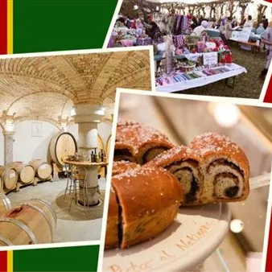

dom 13 dic · dalle 09:45
Agribus delle Valli - Atmosfere e specialità natalizie nelle Valli del Torre e del Natisone
Questo ultimo appuntamento dell'anno con l'Agribus delle Valli, domenica 13 dicembre dalle ore 9:45 presso Cividale del Friuli, propone una giornata dedicata a degustazioni di prodotti pensati per le vostre feste natalizie in famiglia e ai vostri ultimi acquisti e regali…
 Indicazioni
Indicazioni
- Costi e prenotazioni
- Costo non indicato · Prenotazione non indicata
- Programma
- Programma da verificare. Apri la fonte ufficiale per orari e possibili aggiornamenti.
- In caso di maltempo
- Nessuna indicazione specifica pubblicata.
- Note
- Acquisito automaticamente dalla fonte.
L’EVENTO
Descrizione completa
Agribus delle Valli - Atmosfere e specialità natalizie nelle Valli del Torre e del Natisone: dolci sapori, sentori di uve antiche e creatività artigianale
Questo ultimo appuntamento dell'anno con l'Agribus delle Valli, propone una giornata dedicata a degustazioni di prodotti pensati per le vostre feste natalizie in famiglia e ai vostri ultimi acquisti e regali, facendovi ispirare dalla magia dei mercatini di Natale delle Valli. Inizieremo con una sosta a San Pietro al Natisone dedicata ai dolci delle feste: saremo infatti accolti dal Gubanificio Dorboló dove ci attendono strucchi e gubana - in una versione particolare - e un insolito panettone con mele e noci, che vuole richiamare la frutta di boschi e borghi delle Valli.
La gubana imbandiva le tavole durante il periodo natalizio, come segno di festa e condivisione familiare, mentre gli strucchi venivano preparati per essere offerti agli ospiti o regalati. Da Dorbolò li potrete assaggiare anche ricoperti di cioccolato fondente. La Gubana “Cocule” che assaggeremo è una variante rustica della gubana classica e segue fedelmente la ricetta di nonna Antonietta, soprannominata all’epoca hubanciarza, ovvero “colei che faceva Gubane”. Iniziò negli anni ‘30, cuocendole nell’antico forno di famiglia e le confezionava “una ad una” per i suoi compaesani, che le consumavano nelle occasioni speciali.
Una Gubana che sa di “ritorno alle origini”, perché le noci, come accadeva un tempo, diventano indiscusse protagoniste del dolce tipico delle Valli. Una versione la “Cocule”, che ricorda le prime Gubane prodotte dalla nonna seguendo le ricette più antiche, senza nocciole e con poca uvetta.
Joelle e Jessica, terza generazione della famiglia, ci aspettano per raccontarci questi loro dolci e farceli scoprire accompagnati da un caffè. Ci sposteremo poi a Faedis per la visita dell' azienda vitivinicola Ronc dai Luchis a Faedis gestita oggi dal vignaiolo ed enologo Federico De Luca: la tenuta vanta oltre 250 anni di storia legati alla coltivazione degli stessi storici fondi di famiglia che ancora conservano una preziosa biodiversità e vigne centenarie. Se il meteo ce lo consentirà faremo una passeggiata assieme al proprietario tra questi filari storici, dove nascono vini fortemente identitari, perfetti sia come regalo natalizio che per la tavola invernale. Primo fra tutti, il Refosco di Faedis DOC e il Verduzzo. Quest'ultimo lo assaggeremo in versione spumante ottenuto al 100% da uve Verduzzo.
Concluderemo con la visita del piccolo museo contadino allestito all'interno dell'azienda.
Possibilità di acquistare anche olio extravergine ottenuto dall'uliveto di proprietà. Proseguimento verso Attimis per il pranzo all' agriturismo De Poanute
MENÙ
Tortino di polenta con formaggio fuso e funghi
Gnocchi al ragù di daino
Cotechino con brovada e frico con polenta
Contorni vari
Vino e acqua Concluderemo la giornata al mercatino natalizio "Val Grivó" che quest'anno fa tappa in una cornice davvero suggestiva: l'antico Borgo San Pietro a Faedis!
Venticinque espositori principalmente delle Valli del Torre ma non solo ci attendono con la loro creatività. Passeggiando tra le corti del borgo potrete anche ammirare i caratteristici presepi allestiti per l'occasione e, all’imbrunire, godervi la magica atmosfera di centinaia di candele che si accenderanno per illuminare l'intero borgo. Sarà l'occasione perfetta per trovare regali unici fatti a mano, assaporare cibi della tradizione o sorseggiare una bevanda calda tra note e musiche natalizie
Ci saranno anche letture per bambini, un chiosco gastronomico e uno spazio dedicato ai giochi antichi in legno. Orari :
- Ore 9.45 ritrovo al parcheggio della vecchia stazione di Cividale, registrazione partecipanti e partenza
- Ore 10.15: Sosta all'azienda Dorbolò Gubane a San Pietro al Natisone
- Ore 11.30/45: sosta Azienda Ronc dai Luchis a Faedis
- Ore 13.15: Pranzo all' Agriturismo de Poanute ad Attimis
- Ore 15: sosta ai Mercatini natalizi " Val Grivó " a Faedis in Borgo San Pietro
- Ore 17 circa: rientro a Cividale Accompagnatrice : Sabrina Pellizon Tour leader e Guida Naturalistica/Ambientale Escursionistica regionale Posti limitati, prenotazione obbligatoria Scopri i protagonisti dell’evento: visita i loro siti per conoscere storia, prodotti e attività :
Dorbolò Gubane: sito ufficiale
Ronc dai Luchis: sito ufficiale
Agriturismo Poanute: sito ufficiale Il progetto Agribus delle Valli é organizzato in collaborazione con il Distretto Turistico Commerciale Corte Natisonis : sito ufficiale
IL PROGRAMMA
Programma e orari
Appuntamenti raccolti dalle fonti elencate. Dove manca un orario, non è ancora disponibile in questa scheda.
Programma pubblicato
- Dal 2026-12-13 al 2026-12-13
INFORMAZIONI UTILI
Prima di partire
- Controllare la fonte prima di partire.
ORGANIZZAZIONE